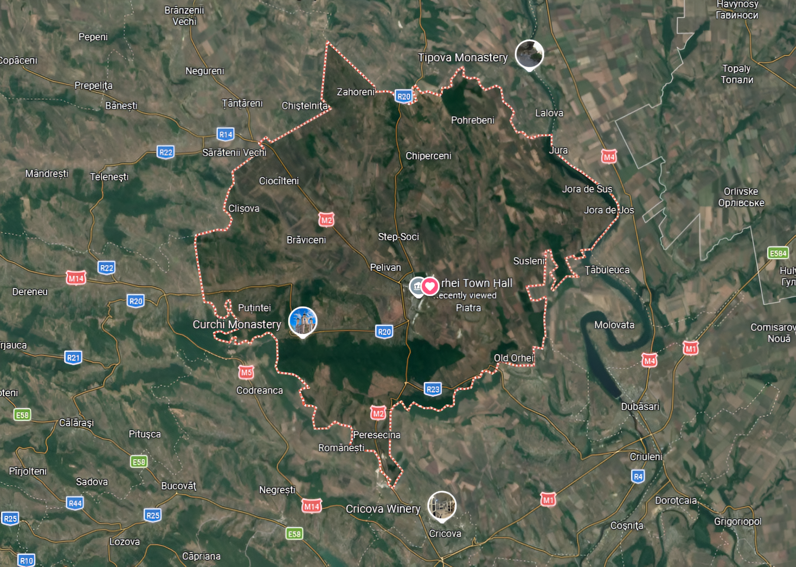

Ia legătura cu noi sau planifică-ți vizita la Orhei
Fie că ai întrebări despre atracțiile orașului, dorești să planifici un tur sau vrei pur și simplu să afli mai multe despre Orhei, suntem bucuroși să te ajutăm.
| Obiectiv | Program | Status |
|---|---|---|
| Orheiul Vechi (mai–oct) | 09:00 – 18:00 | ● Deschis |
| Orheiul Vechi (nov–apr) | 10:00 – 16:00 | ● Deschis |
| Mănăstirea Curchi | 07:00 – 20:00 | ● Deschis |
| Muzeul de Etnografie | Mart–Dum 09–17 | ✗ Luni închis |
| Casa de Cultură | Mar–Dum 10–19 | ● Deschis |
Completează formularul și te vom contacta în cel mai scurt timp posibil.
Răspunsuri la cele mai comune întrebări ale vizitatorilor
Se recomandă alocarea a minimum 3–4 ore pentru o vizită completă a complexului Orheiul Vechi: mănăstirea rupestră, muzeu, cetate și traseele de natură. O zi întreagă îți permite să explorezi și satele din jur — Trebujeni, Butuceni.
Da! Din Chișinău (Stația de Autobuz Centrală) pleacă microbuze spre Orhei la fiecare 20–30 de minute. De la Orhei există transport spre Trebujeni (punctul de acces la Orheiul Vechi) de câteva ori pe zi, sau poți lua un taxi local (~30 MDL).
Orhei se poate vizita tot anul, dar cele mai frumoase perioade sunt mai–iunie (verdeață luxuriantă, temperaturi plăcute) și septembrie–octombrie (culorile toamnei sunt spectaculoase pe văile Răutului, plus Festivalul Vinului în octombrie).
Da! Există hoteluri și pensiuni în orașul Orhei, dar și pensiuni agroturistice în satele din jurul Orheiului Vechi (Butuceni, Trebujeni), unde poți experimenta viața rurală moldovenească autentică, cu mese tradiționale incluse.
Absolut! Complexul Orheiul Vechi este fascinant pentru copii — peșterile, stâncile și ruinele medievale transformă vizita într-o adevărată aventură. Se recomandă încălțăminte confortabilă pentru traseele pe stânci.
